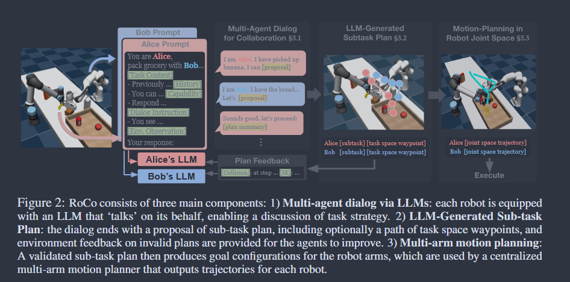

Original Zotero notes associated with papers in this category. Available note images are included. Missing images are marked below.
We propose a novel approach to multi-robot collaboration that harnesses the power of pre-trained large language models (LLMs) for both high-level communication and low-level path planning. Robots are equipped with LLMs to discuss and collectively reason task strategies. They then generate sub-task plans and task space waypoint paths, which are used by a multi-arm motion planner to accelerate trajectory planning. We also provide feedback from the environment, such as collision checking, and prompt the LLM agents to improve their plan and waypoints in-context. For evaluation, we introduce RoCoBench, a 6-task benchmark covering a wide range of multi-robot collaboration scenarios, accompanied by a text-only dataset for agent representation and reasoning. We experimentally demonstrate the effectiveness of our approach – it achieves high success rates across all tasks in RoCoBench and adapts to variations in task semantics. Our dialog setup offers high interpretability and flexibility – in real world experiments, we show RoCo easily incorporates human-in-the-loop, where a user can communicate and collaborate with a robot agent to complete tasks together. See project website project-roco.github.io for videos and code.
ABSTRACT : LLM -> 高级通信（集体讨论策略） + 低级路径规划（任务空间路径）+ 环境碰撞检测prompt
TASK ASSUMPTION:我们考虑一个由 N 个机器人组成的协作多智能体任务环境，有限的时间范围 T 和完整的观察空间 O。每个智能体 n 都有观察空间 Ωn ⊂ O。手动定义描述函数 f，将时间步 t 处的任务语义和观察结果转换为自然语言提示：ltn = f n(ot), ot ∈ Ωn。将 LLM 输出（例如文本字符串“PICK object”）映射到相应子任务的解析函数，该子任务可以通过一个或多个夹具目标配置来描述。
MUTI-ARM PATH PLANNING:给定一个子任务，我们使用集中式运动规划来找到所有机器人达到其目标配置的轨迹。设X ∈ Rd 表示所有N 个机械臂的关节配置空间，Xob 为配置空间中的障碍物区域，则无碰撞空间Xfree = X \Xob。给定初始条件 xinit ∈ Xfree，目标区域 Xgoal ∈ Xfree，运动规划器找到最佳 σ* : [0, 1] → X 满足： σ*(0) = xinit, σ*(1) ∈ xgoal。由此产生的 σ* 由机器人手臂关节控制器用于开环执行。
METHOD:

假设：多智能体观测不对称 ——>（LLM专属代理 Structured Agent-specific Content）Dialogue ——>沟通协议：要求每个代理（在提示的通信指令部分给出说明）通过在两个选项之间做出决定来结束他们的响应：1）指示其他人继续讨论； 2）总结每个人的行动并提出最终的行动建议；仅当每个代理在当前对话轮中至少响应一次时才允许这样做。该协议旨在允许智能体自由讨论，同时保证在有限次数的交换内提出一个子任务计划
——>生成子任务：最后一个发言代理总结生成，分配给每个代理一个子任务，先验证再执行，若失败则会附加到每个代理提示中并开始下一轮谈话：验证方法如下：
——>LLM子任务计划 + 可选 task-space waypoint PATH
EXPERIMENTS: CENTRAL PLAN：全局观察 + LLM 3D Waypoints
BENCHMARK: RoCoBench
LIMITATIONS: 完美感知 + 开环执行 + 查询效率
Tips: What aspects did you question, how do you think it can be improved?
Tips: What was done, what problem was solved, innovations and shortcomings?
Tips: What aspects did you question, how do you think it can be improved?
Tips: What was done, what problem was solved, innovations and shortcomings?